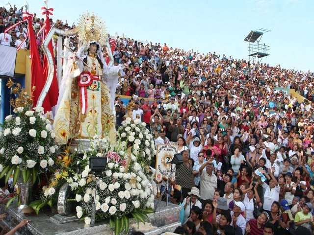

TRADICIONES MAS RECONOCIDAS - PIURA
Como todos los pueblos de nuestra costa, el piurano es «fiestero» y alegre, y enciende las luces de su devoción y de sus fiestas en torno a santos, vírgenes, cruces y fechas religiosas. Son concentraciones de fieles auténticamente populares, en las cuales el personaje central y el protagonista real es el hombre común, el campesino humilde, el trabajador corriente. Con razón se ha dicho que la religiosidad popular es un potente factor de identidad regional, de organización social y de cohesión cultural.
En el departamento de Piura, estas fiestas se han repartido, proporcionalmente, por provincias y regiones. Las más importantes son: la Semana Santa de Catacaos, la Feria Internacional de Reyes y la fiesta del Señor de Chocán en Sullana, la de Nuestra Señora de las Mercedes en Paita, la de la Virgen del Carmen en Huancabamba, y la del Señor Cautivo en Ayabaca.
FIESTAS MAS RECONOCIDAS DE PIURA
FIESTA TRADICIONAL - VIRGEN DEL TRANSITO - CASAGRANDE
La Santa Patrona “Virgen del Tránsito”, volvió a iluminar a Casagrande, con su manto celestial, como lo viene haciendo desde agosto en 1927, de los días 18, 19, 20 del mes mescionado extendiendo su alegría no solo a Casagrande sino también a todo el Distrito de La Arena.
TRADICIONAL BAJADA DE REYES NARIHUALA - CATACAOS PIURA
En la región Piura, Narihualá se prepara para recibir a miles de visitantes y turistas en la tradicional Baja de los Reyes”, que año a año celebran en este rincón turístico del Bajo Piura. El 6 y 7 de enero .
VIRGEN DEL TRANSITO
CASAGRANDE

TRADICIONAL BAJADA DE REYES
NARIHUALA
LA SEMANA SANTA EN CATACAOS
El día lunes desfila primero el Señor Cautivo, luego, San Juan y la Dolorosa. El día martes salen las mismas efigies. El miércoles el orden es Cristo de pie y luego Cristo de hinojos, llevándose a cabo la ceremonia llamada «el despedimiento», que consiste en el encuentro de la imagen del Cristo arrodillado con los demás santos. El Jueves Santo no sale la procesión, que el día anterior ha retornado al templo.
FIESTA DE LA VIRGEN DE LAS MERCEDES - PAITA PIURA
Paita se llena de gente y viste de gala todos los años del 22 al 24 de setiembre, cuando se celebra en el puerto la fiesta de Nuestra Señora de las Mercedes, «Gran Maríscala y Patrona de las Armas del Perú». Una semana antes del día central, que es el 24, se llevan a cabo en el templo principal novenas y rezos, con una extraordinaria asistencia de paiteños y piuranos, en preparación para la gran procesión de la Virgen.
CEREMONIA DE LAS SEMANA SANTA
CATACAOS - PIURA

FIESTA VIRGEN DE LAS MERCEDE
PAITA - PIURA
FIESTA PATRONAL SEÑOR CAUTIVO DE AYABACA - PIURA
La celebración se inicia el día 3 de octubre con el multitudinario paseo del estandarte del Señor Cautivo. La primera salida es el 12, acompañado de la Virgen del Pilar; previamente, en una tarea reservada exclusivamente a los varones, la imagen ha sido limpiada, se le ha arreglado el pelo y puesto un traje nuevo, que será cambiado diariamente para las procesiones.
CELEBARCION DE LOS DIFUNTOS
El homenaje a los muertos se inicia desde el atardecer del 1ro de noviembre con la coronación de los «angelitos» y se prolonga casi durante 24 horas. Por la noche, la costumbre de las «velaciones» convierte los cementerios de Piura, Catacaos, La Unión, Sechura y otros, en ciudades llenas de luces, por las innumerables velas encendidas.
FIESTA DEL SEÑOR CAUTIVO
AYABACA - PIURA
CELEBRACION DE LOS DIFUNTOS
PIURA